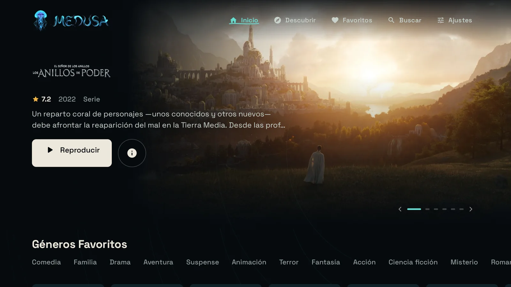
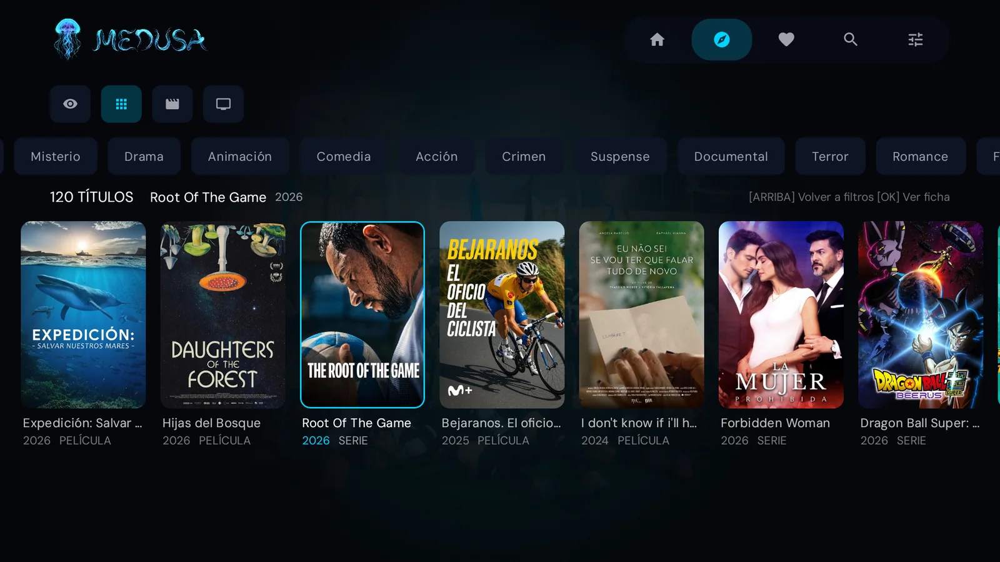
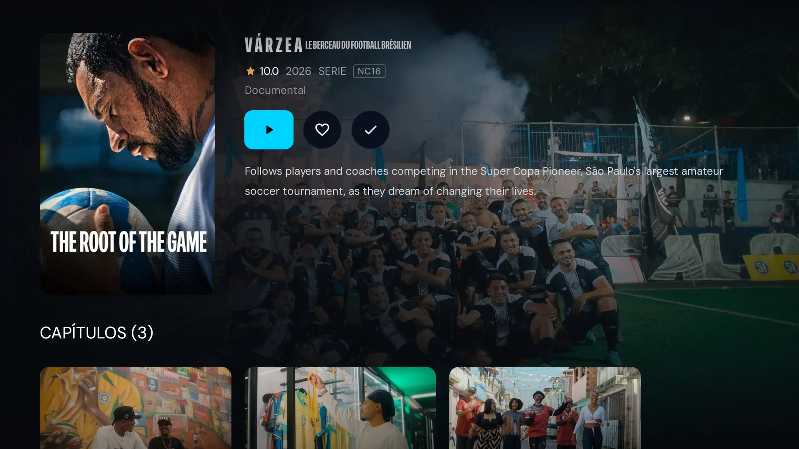
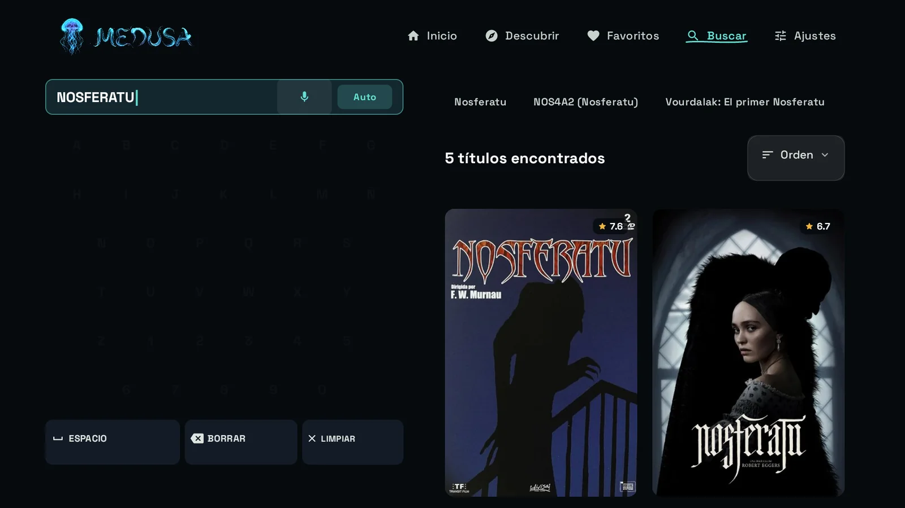

Una interfaz a tres metros.
Medusa TV convierte una biblioteca Jellyfin en una interfaz de diez pies pensada como un instrumento de cine. DM Sans, cian eléctrico y foco de alto contraste sobre arte a sangre.
- Plataforma
- Android TV y tablet
- Construida con
- Kotlin y Compose TV
- Android mínimo
- 8.0, API 26
- Servidor
- Jellyfin, autoalojado
Demo de foco, sin reproducción. Tarjetas con borde de 1,5 dp; sin escala. Las vecinas conservan su opacidad.
Tres metros cambian todas las reglas.
En un salón, la tele no se mira: se habita. El pulgar tiene cinco teclas, la vista llega cansada y la pantalla compite con una lámpara encendida. Medusa se diseñó desde esa restricción, no desde una maqueta de escritorio.
A tres metros, el campo de visión útil se estrecha y el detalle se pierde. Lo que en un monitor de 27 pulgadas es un metadato discreto, en un sofá es ruido. La interfaz tiene que contestar tres preguntas sin que el usuario se acerque: dónde estoy, qué puedo hacer y qué ha cambiado. Un gutter de 48 dp deja respirar el contenido.
De ahí salen las decisiones que atraviesan toda la app: arte a sangre, títulos fuera del póster, una sola acción primaria, un dock de iconos y un foco que no rellena bloques.
La jerarquía importa más que la densidad. Un título grande, un dato y una acción; el resto puede esperar.
El foco es el cursor. Solo puede haber una luz encendida a la vez y siempre tiene que estar a la vista.
Sin blur en tiempo real, sin escalar tarjetas dentro de carruseles y sin animaciones autónomas en el chrome. El hero rota cada 12 s cuando no tiene foco y las partículas estacionales son opcionales. La fluidez es una decisión de diseño.
«Si un elemento no comunica foco, jerarquía o dato, se elimina.» Sistema de diseño de Medusa, 2026
El sistema cabe en una sola voz.
DM Sans cubre titulares, interfaz y datos. La identidad no vive en una metáfora de interacción, sino en la paleta, el emblema y el arte; el comportamiento del mando es el de una tele.
variable y OFL.
Una sola voz.
- Titular
- 36 sp, 700
- Sección
- 24 sp, 700
- Cuerpo
- 13 sp, 400
- 16 sp, 600
- Etiqueta
- 11 sp, 600
| Color | Muestra | Ratio |
|---|---|---|
| Blanco puro | #FFFFFF | 20,3:1 |
| Aqua glaciar | #8BFFFF | 17,2:1 |
| Nota | #FACC15 | 13,2:1 |
| Cian Medusa | #00D2FF | 11,3:1 |
| Oro | #D4AF37 | 9,6:1 |
| Ámbar | #E5A44D | 9,4:1 |
| Zinc | #A1A1AA | 7,9:1 |
| Grafito | #71717A | 4,2:1 |
| Cobalto | #0B5EFF | 3,9:1 |
El cobalto no se usa como texto: 3,9:1 no llega a AA. Grafito se reserva a micro-datos y separadores.
Anatomía del foco
- Borde de 1,5 dp en el póster. Un solo elemento lo lleva a la vez; el reposo no simula foco.
- Dock de iconos. Cápsulas de 18 dp de radio e iconos de 18 dp; sin etiquetas ruidosas.
- El título sube a plena luminosidad. Las tarjetas vecinas conservan su opacidad: no hay spotlight.
- zIndex 10 y nada más. Sin escalar la tarjeta ni atenuar a sus vecinas: se evita el temblor y se conservan los 60 fps.
Las pantallas, una gramática.
Seis pantallas distintas en siete capturas. Todas están tomadas de la app real en un televisor de 1080p, con una biblioteca de prueba real. No hay maquetas: lo que ves es lo que se renderiza.

El hero ocupa la primera pantalla completa. La navegación flota sin competir con el arte y el título del contenido manda.
- ClearLogo o DM Sans bold
- scrim, ClearLogo y dock de iconos

Los pósters muestran el título fuera; las filas de biblioteca y las recomendaciones comparten la misma gramática. La tarjeta enfocada lleva el borde cian.
- filas de biblioteca
- título y año fuera del póster

Filtros de formato y un rail de temáticas. Cada etiqueta suma un filtro AND; BACK deshace la última. La tarjeta enfocada lleva borde de 1,5 dp; el foco no exige OK.
- contador y atajos de mando
- chips de 8 dp de radio

Póster a la izquierda y metadatos editoriales a la derecha. La sinopsis respira sobre el fondo; no hay panel redondeado que la encierre.
- estados de visto y favorito
- acciones circulares

El teclado ocupa la mitad izquierda y los resultados aparecen sin cambiar de pantalla. Escribir no rompe el contexto.
- sugerencias predictivas
- resultados en tiempo real

Los filtros de formato y el orden viven sobre la colección, no en un menú aparte. La portada sigue siendo la protagonista.
- insignias de corazón y nota
- conteo de la colección

Barra lateral y grupos sobre superficie elevada. El ítem activo se resalta con el acento y el estado del servidor se lee de un vistazo.
- tarjetas de 10 dp
- sincronización y sesión visibles
Capturas tomadas en un televisor de 1920 × 1080. La biblioteca y los títulos pertenecen a sus titulares.
Lo que no se ve también es diseño.
Una interfaz fluida en un televisor de gama baja no sale del renderizado: sale de decidir qué no se dibuja. Cero blur, cero escala por tarjeta y un chrome sin animaciones autónomas son decisiones de producto, no microoptimizaciones. El hero rota solo cuando no tiene foco y las partículas estacionales son opcionales.
- Versión
- 2.4.1
- Plataforma
- Android TV, Google TV, Fire TV y tablet
- Android mínimo
- 8.0, API 26
- Lenguaje
- Kotlin 2.0.21, Compose TV y Hilt
- Reproductor
- Media3 1.5.1 y decodificador FFmpeg
- Datos
- Room 22, DataStore, Retrofit y OkHttp
- Pruebas
- 36 clases unitarias (213 casos) y 1 instrumentada (5 casos)
- Distribución
- APK firmado y OTA desde GitHub Releases
La reproducción no se rinde.
Jellyfin puede servir un archivo local, un .strm con una IP interna de Docker
o un contenedor que Media3 no abre. El orden de candidatos es explícito y nunca deja la
lista vacía.
- stream?static=trueJellyfin resuelve el .strm en el servidor. La tele nunca intenta alcanzar la IP interna del archivo.
- RemuxEl mismo endpoint sin static, cuando el contenedor lo permite.
- DirectStreamUrlLa URL que devuelve PlaybackInfo para el perfil del dispositivo.
- TranscodingUrlHLS/TS con H.264 y AAC como salida universal.
- Transcodificación completaSi todo falla, el servidor renegocia audio y versión. La app reintenta sin gastar el presupuesto de audio.
Con TOD y el
plugin Catalogo, Medusa
consulta el estado del ítem, pide Prepare si hace falta, muestra el buffer y
reproduce cuando stream_ready es verdadero. El cliente no usa la URL
play del proxy: reproduce a través de Jellyfin para conservar transcodificación,
subtítulos y progreso.
Presupuesto de rendimiento
La regla es simple: si cuesta frames, no entra. El perfil de dispositivo y el orden de candidatos están cubiertos por pruebas golden.
La identidad se asentó en tres pasadas.
La primera exploró metáforas propias. La segunda probó una capa de componentes Material TV. La tercera volvió al cine. Estos son los commits reales, con la hora y el motivo. Un estudio de diseño también es un registro de lo que se descartó.
22 y 23 de noviembre de 2026, Madrid
-
8430b41La paleta abisal
El negro digital y el cian neón de plantilla se sustituyen por tinta abisal y una luz bioluminiscente. La paleta sobrevive a las tres pasadas; el acento termina en el cian
#00D2FFdel logotipo. -
2d6958fNavegación tipográfica, descartada
Subrayados y pestañas de texto. Se prueba en la tele y se descarta: la navegación vuelve al dock de iconos.
-
f47e297Hero batimétrico, descartado
Arcos estáticos, anillo de contacto y un pulso de sonar. La profundidad se veía bien, pero la metáfora no aportaba orientación y añadía una animación autónoma.
-
43ab861Legibilidad en la tele real
Ajustes después de mirar la interfaz a tres metros, no en el monitor. Tamaños, contraste y objetivos. Esta pasada sobrevive entera.
-
886ec79De editorial a cinematográfico
Se retira Fraunces. La interfaz se queda con una sans de instrumento; la versión final usa DM Sans. El hero deja de parecer una portada de periódico.
-
8ed14d9Material TV, descartado
Tabs pill, foco 1,1x, chips de 48 dp y overscan de 58/28 dp. La convención de componentes no era la identidad; se retira.
-
507fa6dLa identidad vuelve al cine
DM Sans, cian
#00D2FF, dock de iconos, borde de 1,5 dp y cero escala. La paleta gana cobalto, aqua y oro. La identidad queda en el arte, la luz y la tipografía; el comportamiento es el de una tele.
El pulido de badges y el Top 10 tipográfico llegan con esta capa.
«La identidad está en lo que se renderiza: arte, luz y tipografía.» Sistema de diseño de Medusa, 2026
Lo que queda abierto
- Tablet táctilEl modo solo iconos se pensó para un mando. Falta una pasada de objetivos táctiles y gestos para el uso con el dedo.
- Nombres heredados
TvPaletteconserva nombres comoTextSecondaryCooloFocusInkque ya no describen sus valores actuales. - Medición de framesLa regla de cero blur está en el código y en las revisiones, pero no hay un benchmark automático de frames en CI.
Auditoría de diseño del 22 de noviembre de 2026. La deuda se declara; no se esconde en una diapositiva.
Vuelve a la superficie.
Se instala desde un APK firmado. No hay Play Store, ni cuenta, ni analítica. La app se actualiza sola desde GitHub Releases y verifica el SHA-256 antes de instalar.
Instalar en la tele
- Descarga el APK en el dispositivo o envíalo por ADB con
adb install. - Permite el origen desconocido para el explorador o el receptor que use la tele.
- Abre Medusa, elige tu servidor Jellyfin y entra con tu cuenta o con Quick Connect.
Si el manifiesto de actualización no se puede verificar durante siete días, la app falla cerrada en lugar de ejecutar una versión sin comprobar.